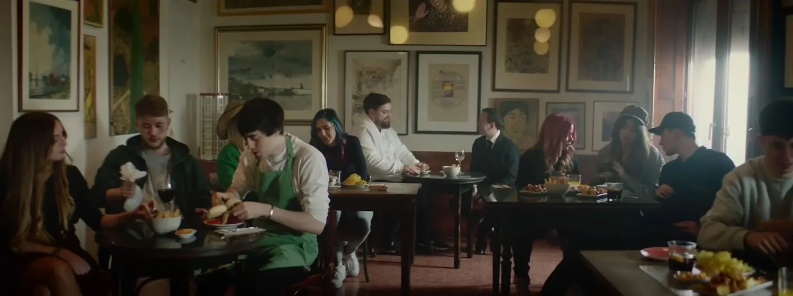
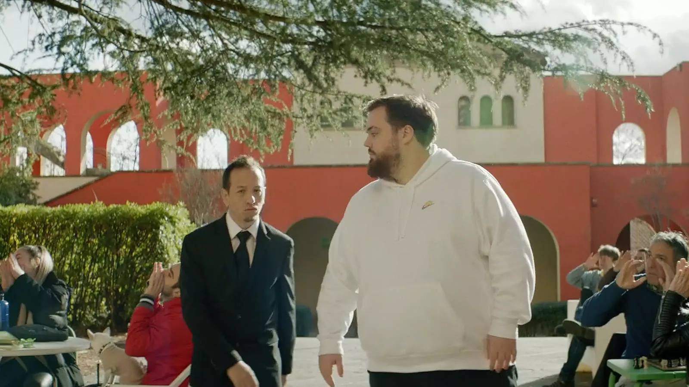

Vídeo de presentación centrado en los creadores de contenido de KOI, con una estética inspirada en videoclip y pensada para el mundo del streaming.
El anuncio del equipo, en el que se enmarca este vídeo, reunió a 15.000 personas en el Palau Sant Jordi y superó los 350.000 espectadores en directo online.